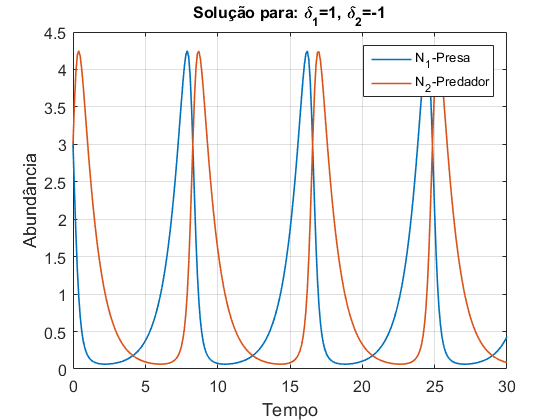
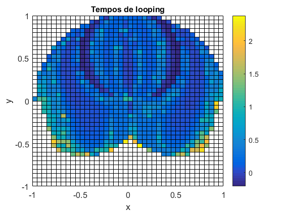

1º Laboratório de Modelação e Simulação
Alice Rosa, nº90007
Beatriz Pereira, nº90029
Grupo 16, Turno 3ª feira às 9h00
Contents
- 1. Simulação do movimento livre de uma viatura
- 2.Modelo Predador-Presa
- 2.2 Diferentes respostas para diferentes
- 2.3 Ponto de equilíbrio, Espaço de fase (,
 )
) - 2.4 Otimização da curva
- 2.4 a)
- 2.4 b)
- 2.4 c)
- 2.4 d)
- 3. Sistema Caótico
- 3.1. Realização do modelo do sistema em Simulink e a passagem dos dados para o Matlab
- 3.2. Curva de Lissajous
- 3.4 Tempo até que uma das barras faça um looping
- 3.4 Verificação de resultados
1. Simulação do movimento livre de uma viatura
%Criação do seguinte diagrama de blocos com o SIMULINK: open('carro');
%Definição dos parâmetros de simulação m=30; beta=5; vo_set=[-3 3]; tau_set=[3 6 10]; yo=5; tt=50; close all; f1=figure; f2=figure; for counter=1:length(vo_set); vo=vo_set(counter); for tau=[3 6 10] sim('carro',tt); figure(f1); plot(t,v); hold on; figure(f2); plot(t,y); hold on; end end figure(f1); xlabel('t(s)','fontsize',12); ylabel('v(m/s)','fontsize',12); title('Velocidade','fontsize',12); grid on; set(gca,'fontsize',12); lg=legend(sprintf('V_o=%d m/s tau=%d s',vo_set(1), tau_set(1)),... sprintf('V_o=%d m/s tau=%d s',vo_set(1), tau_set(2)),... sprintf('V_o=%d m/s tau=%d s',vo_set(1), tau_set(3)),... sprintf('V_o=%d m/s tau=%d s',vo_set(2), tau_set(1)),... sprintf('V_o=%d m/s tau=%d s',vo_set(2), tau_set(2)),... sprintf('V_o=%d m/s tau=%d s',vo_set(2), tau_set(3))); set(lg,'fontsize',9); hold on; figure(f2); xlabel('t(s)','fontsize',12); ylabel('h(m)','fontsize',12); title('Posição','fontsize',12); grid on; set(gca,'fontsize',12); lg=legend(sprintf('V_o=%d m/s tau=%d s',vo_set(1), tau_set(1)),... sprintf('V_o=%d m/s tau=%d s',vo_set(1), tau_set(2)),... sprintf('V_o=%d m/s tau=%d s',vo_set(1), tau_set(3)),... sprintf('V_o=%d m/s tau=%d s',vo_set(2), tau_set(1)),... sprintf('V_o=%d m/s tau=%d s',vo_set(2), tau_set(2)),... sprintf('V_o=%d m/s tau=%d s',vo_set(2), tau_set(3))); set(lg,'fontsize',9);
Tendo em conta que não está a ser aplicada nenhuma força exterior sobre o carro, a única força que temos a atuar é a força de atrito, desta forma, é de esperar que passado algum tempo a velocidade do carro tenda para 0, que é exatamente o que se verifica nos gráficos obtidos. Também podemos verificar que quanto menor a constante de tempo , mais depressa o carro pára, o que seria de esperar tendo em conta a equação obtida na alínea 1.3, pois a exponencial está elevada a .
Para os gráficos obtidos relativamente à posição do carro, esperava-se que passado algum tempo este estabilizasse numa posição que se pode calcular a partir da expressão obtida em 1.4:
Também se verificou que para uma velocidade inicial negativa (carro em marcha atrás) a posição em que o carro pára também é negativa tendo em conta o nosso referencial.
2.Modelo Predador-Presa
2.2 Diferentes respostas para diferentes
% Criação do seguinte diagrama de blocos com o SIMULINK: open('predador_presa');
clear; close all; delta1=1; delta2=-1; alpha1=1; alpha2=1; N1_inicial=3; N2_inicial=3; tt=30; sim('predador_presa',tt); figure(1); plot(t,N1,t,N2,'LineWidth',1.2); xlabel('Tempo','fontsize',12); ylabel('Abundância','fontsize',12); set(gca,'fontsize',12); title('Solução para: \delta_1=1, \delta_2=-1','fontsize',12); legend('N_1-Presa','N_2-Predador'); grid on; hold on; tt=3; delta1=-1; delta2=1; sim('predador_presa',tt); figure(2); plot(t,N1,t,N2,'LineWidth',1.2); xlabel('Tempo','fontsize',12); ylabel('Abundância','fontsize',12); set(gca,'fontsize',12); title('Solução para: \delta_1=-1, \delta_2=1','fontsize',12); legend('N_1-Presa','N_2-Predador'); grid on; hold on; tt=5; delta1=-1; delta2=-1; N1_inicial=3; sim('predador_presa',tt); figure(3); plot(t,N1,t,N2,'LineWidth',1.2); xlabel('Tempo','fontsize',12); ylabel('Abundância','fontsize',12); set(gca,'fontsize',12); title('Solução para: \delta_1=-1, \delta_2=-1','fontsize',12); legend('N_1-Presa','N_2-Predador'); grid on; hold on; delta1=-1; delta2=-4; sim('predador_presa',tt); figure(4); plot(t,N1,t,N2,'LineWidth',1.2); xlabel('Tempo','fontsize',12); ylabel('Abundância','fontsize',12); set(gca,'fontsize',12); title('Solução para: \delta_1=-1, \delta_2=-4','fontsize',12); legend('N_1-Presa','N_2-Predador'); grid on; hold on;

Para o primeiro gráfico, temos a solução oscilatória que como previsto ocorre quando >0 e <0. O segundo gráfico é a solução em que o predador cresce indefenidamente e a presa se extingue, com e >0. O terceiro gráfico é a solução em que a presa e o predador se extiguem passado algum tempo, com <0 e <0. O último gráfico obtido tem a mesma solução que o terceiro, no entanto, enquanto que no gráfico anterior os predadores atingem um pico e depois,passado algum tempo, é que se extiguem, neste gráfico diminui-se o de forma a que as espécies se extiguissem sensívelmente ao mesmo tempo.
2.3 Ponto de equilíbrio, Espaço de fase (, )
clear; close all; N1_inicial_set=[3 2]; N2_inicial_set=[2 1]; delta1=1; delta2=-1; alpha1=1; alpha2=1; tt=30; %Espaço de fase for counter=1:length(N1_inicial_set); N1_inicial=N1_inicial_set(counter); N2_inicial=N2_inicial_set(counter); sim('predador_presa',tt); figure(1); plot(N1,N2); hold on; end figure(1); xlabel('Abundância da Presa','fontsize',12); ylabel('Abundância do Predador','fontsize',12); set(gca,'fontsize',12); legend(sprintf('N1(0),N2(0)= %d,%d',N1_inicial_set(1),N2_inicial_set(1)),... sprintf('N1(0),N2(0)= %d,%d',N1_inicial_set(2),N2_inicial_set(2))); title('Modelo predador-presa'); grid on; %Ponto de equilíbrio N1_inicial=delta1/alpha1; N2_inicial=-delta2/alpha2; tt=10; sim('predador_presa',tt); figure(2); p=plot(t,N1,t,N2,'--'); p(1).LineWidth = 1.5; p(2).LineWidth = 2; xlabel('Tempo','fontsize',12); ylabel('Abundância','fontsize',12); set(gca,'fontsize',12); title('Ponto de equilíbrio','fontsize',12); legend('N1-Presa','N2-Predador'); grid on; % Diferentes evoluções temporais N1_inicial_set=[1 2]; N2_inicial_set=[2 1]; tt=30; for counter=1:length(N1_inicial_set); N1_inicial=N1_inicial_set(counter); N2_inicial=N2_inicial_set(counter); sim('predador_presa',tt); figure(3); p=plot(t,N1,t,N2); hold on; end figure(3); xlabel('Tempo','fontsize',12); ylabel('Abundância','fontsize',12); p(1).LineWidth = 1.5; p(2).LineWidth = 1.5; set(gca,'fontsize',12); lg=legend(sprintf('N_1-CI(%.0f,%.0f)',N1_inicial_set(1),N2_inicial_set(1)),... sprintf('N_2-CI(%.0f,%.0f)',N1_inicial_set(1),N2_inicial_set(1)),... sprintf('N_1-CI(%.1f,%.0f)',N1_inicial_set(2),N2_inicial_set(2)),... sprintf('N_2-CI(%.1f,%.0f)',N1_inicial_set(2),N2_inicial_set(2))); set(lg,'fontsize',11); title('Modelo predador-presa'); grid on;
No primeiro gráfico obteve-se o espaço de fase (, ) para a solução oscilatória com diferentes valores de condições iniciais. O segundo gráfico é a confirmação do ponto de equilíbrio, ou seja, para determinadas condições iniciais (calculadas na alínea 2.2) o sistema mantêm-se constante no tempo, que é o que se verifica. O último gráfico mostra como a mudança das condições iniciais alteram a evolução do sistema no tempo. A situação em que < está em avanço e quadratura face à situação em que > .
2.4 Otimização da curva
2.4 a)
clear; close all; N1_inicial=4; N2_inicial=1.6; delta1=3.1; delta2=-1.5; alpha1=1.4; alpha2=0.7; tt=20; load('presas.mat'); sim('predador_presa',tt); plot(tr,yr,t,N2); legend('N_1-presa','N_2-predador'); xlabel('Tempo','fontsize',12); ylabel('Abundância','fontsize',12); set(gca,'fontsize',12); grid on;
O objectivo nesta questão era arranjar um equílibrio entre o e de forma a quando o número de presas diminuisse passado algum tempo o número de predadores também começava a diminuir e vice-versa, mantendo sempre a mesma desfasagem entre as curvas da presa e predador. Desta forma, variou-se os parâmetros até se chegar a uma solução aproximada da que se queria sendo esta (, )=(0.7,1.6).
2.4 b)
clear; close all; N0_set=1.6:0.002:1.62; alpha_set=0.7:0.002:0.72; [X,Y]=meshgrid(N0_set,alpha_set); for i=1:length(N0_set); V(1)=N0_set(i); for j=1:length(alpha_set); V(2)=alpha_set(j); dif(i,j)=MVAD(V); end % waitbar(i/10); end surf(X,Y,dif); set(gca,'zscale','log'); set(gca,'zscale','log','fontsize',12); xlabel('N_2(0)','fontsize',12); ylabel('\alpha_2','fontsize',12'); zlabel('Erro','fontsize',12); colorbar;
Função utilizada para calcular o Erro
type('MVAD.m');
function y=MVAD(x)
options = simset('SrcWorkspace','current');
load('presas.mat');
N1_inicial=4;
N2_inicial=x(1);
delta1=3.1;
delta2=-1.5;
alpha1=1.4;
alpha2=x(2);
tt=20;
x_max=-1;
sim('predador_presa',[],options);
%Cálculo no máximo valor absoluto das diferenças
for k=1:length(tr)
x=abs(N1(k)-yr(k));
if x>x_max
x_max=x;
end
end
y=x_max;
end
Nesta questão, o objectivo era encontrar os parâmetros e de forma a obtermos uma curva o mais próxima possível da curva que nos foi dada. Para isto criou-se a função erro que nos devolve o máximo valor absoluto das diferenças entre os pontos fornecidos e os pontos simulados para determinados parâmetros. No final, a partir do gráfico obtido conclui-se que, dos parâmetros testados, os que melhor se ajustam à curva fornecida são (, )=(0.704,1.6120).
2.4 c)
clear; N0_2=[1.6, 2]; alpha_2=[0.7, 3]; for i=1:length(N0_2) xo=[N0_2(i),alpha_2(i)]; fun=@MVAD; [point,erro]=fminsearch(fun,xo); display(erro); display(point); end
erro =
0.1558
point =
1.6144 0.7047
erro =
4.4023
point =
1.7097 3.1166
Nesta alínea, para descobrir os parâmetros utilizou-se a função fminsearch em que a partir da função erro desenvolvida e de parâmetros iniciais esta função vai fazendo chamadas à função erro aproximando-se cada vez mais do ponto desejado. Desta forma, o nosso código fica muito mais eficiente e os parâmetros finais são mais exatos, relativamente à procura feita anteriormente, com (, )=(0.7047,1.6144).
No entanto, realizou-se ainda outro exemplo com outro ponto inicial afastado do resultado ideal, onde se obteve um resultado completamente diferente. Podemos assim concluir que é melhor utilizar esta função quando já temos uma ideia dos parâmetros a que corresponde o erro mínimo, senão a função encontra outro qualquer mínimo local que não a resposta ideial.
2.4 d)
clear; close all; N1_inicial=4; N2_inicial=1.6144; delta1=3.1; delta2=-1.5; alpha1=1.4; alpha2=0.7047; tt=20; load('presas.mat'); sim('predador_presa',tt); plot(tr,yr,'o',t,N1,'LineWidth',1.2); legend('N1-Fornecido','N1-Simulado'); xlabel('Tempo','fontsize',12); ylabel('Abundância','fontsize',12); set(gca,'fontsize',12); legend('N_1-Pontos fornecidos','N_1-Curva simulada'); grid on; ax = gca; ax.GridAlpha = 0.6;

Esta alínea serve como verificação dos resultados obtidos. Como podemos verificar utilizando os parâmetros calculados na alínea (c) a curva simulada ajusta-se muito bem aos pontos fornecidos.
3. Sistema Caótico
3.1. Realização do modelo do sistema em Simulink e a passagem dos dados para o Matlab
open('pendulo_duplo');
clear; close all; m=1; l=0.5; g=9.8; teta_1_inicial=0.05; teta_2_inicial=0.05; p_1_inicial=0; p_2_inicial=0; tt=3; sim('pendulo_duplo', tt); %posição ao longo do tempo x=l*(sin(teta_2)+sin(teta_1)); y=-l*(cos(teta_2)+cos(teta_1)); figure(1); plot(x,y); xlabel('x'); ylabel('y'); title('Sistema não caótico'); teta_1_inicial=15; teta_2_inicial=15; sim('pendulo_duplo', tt); x=l*(sin(teta_2)+sin(teta_1)); y=-l*(cos(teta_2)+cos(teta_1)); figure(2); plot(x,y); xlabel('x'); ylabel('y'); title('Sistema caótico');
A partir dos gráficos obtidos verificou-se a implementação correta do sistema dinâmico. Uma vez que para e pequenos obteve-se uma curva em que os ângulos não se afastam muito dos ângulos iniciais, como era de esperar. Enquanto que no segundo gráfico, se verifica que para ângulos maiores o sistema começa a ter um comportamento mais aleatório e irregular.
3.2. Curva de Lissajous
clear; close all; m=1; l=0.5; g=9.8; teta1_set=[0.05 5 10]; teta2_set=[0.05 5 15]; p_1_inicial=0; p_2_inicial=0; tt=2.5; titulos={'Curva de Lissajous - regime de fraca amplitude','Regime de média amplitude',... 'Regime de alta amplitude'}; for i=1:length(teta1_set) teta_1_inicial=teta1_set(i); teta_2_inicial=teta2_set(i); sim('pendulo_duplo', tt); figure(i); plot(teta_1,teta_2); title(titulos(i),'fontsize',14); xlabel('\theta_1','fontsize',16); ylabel('\theta_2','fontsize',16); set(gca,'fontsize',14); grid on; end
Para valores muito pequenos de  e , verificamos que o sistema descreve uma curva de Lissajous quase perfeita, e que basta um pequeno aumento dos ângulos para a curva começar a perder a sua forma. No último gráfico com valores de inicial superiores a 10º a curva fica completamente desformada. Podemos concluir que dependendo dos ângulos iniciais que escolhemos oferecemos menos/mais "momento" às barras que originam trajectórias definidas/aleatórias.
e , verificamos que o sistema descreve uma curva de Lissajous quase perfeita, e que basta um pequeno aumento dos ângulos para a curva começar a perder a sua forma. No último gráfico com valores de inicial superiores a 10º a curva fica completamente desformada. Podemos concluir que dependendo dos ângulos iniciais que escolhemos oferecemos menos/mais "momento" às barras que originam trajectórias definidas/aleatórias.
O tempo de simulação influencia a forma da curva, uma vez que verificámos que para, aproximadamente, tt=2.5 s o modelo desenha uma curva de Lissajous, enquanto que se aumentarmos o tempo(por exemplo, tt=10 s) o modelo desenha várias curvas.
3.4 Tempo até que uma das barras faça um looping
clear; close all; m=1; l=0.5; g=9.8; tt=250; x=-1:0.05:1; y=-1:0.05:1; dteta1=0; dteta2=(-30*pi)/180; for i=1:length(x); for j=1:length(y); d=sqrt(x(i)^2+y(j)^2); %Verificação se a distância é inferior a 2*l if d > 2*l tempo(i,j)=NaN; continue; else %Encontrar a posição do pendûlo através das coordenadas teta=posicao(x(i),y(j),l); teta_1_inicial=teta(1); teta_2_inicial=teta(2); p_1_inicial=(1/6)*m*(l^2)*(3*dteta2*cos(teta_1_inicial-teta_2_inicial)); p_2_inicial=(1/6)*m*(l^2)*(2*dteta2); sim('pendulo_duplo',tt); %Encontrar o indíce em que o pêndulo dá um loop (volta de 360º) k=find((teta_1<teta_1_inicial-(2*pi)) | (teta_1>teta_1_inicial+(2*pi)) | ... (teta_2<teta_2_inicial-(2*pi)) | (teta_2>teta_2_inicial+(2*pi)),1); if k~=0 %Se k=0, nenhuma das barras deu um loop tempo(i,j)=t(k); else tempo(i,j)=NaN; end end end %waitbar(i/(length(x))); end figure(1); pcolor(x,y,log10(tempo')); xlabel('x','fontsize',12); ylabel('y','fontsize',12); set(gca,'fontsize',12); title('Tempos de looping','fontsize',12); colorbar;
Para a realização desta alínea foi utilizada a função 'posicao', que recebe as coordenadas da ponta do pêndulo e retorna os ângulos iniciais do mesmo, utilizando as expressões obtidas na alínea 3.3.
type('posicao.m');
function teta=posicao(x,y,l)
%Verificar se está na origem
if x==0 && y==0
teta(1)=0;
teta(2)=pi;
else
d=sqrt(x^2+y^2);
sinal_x=x/abs(x); %guarda o sinal do x
sinal_y=y/abs(y); %guarda o sinal do y
if x==0 %Se o x=0 só nos interessa o sinal do y
teta(1)=(acos(d/(2*l))+acos(-y/d));
teta(2)=acos((-y/l)-cos(teta(1)))*sinal_y;
else
%Se o sinal_x<0 queremos que o ângulo seja negativo
teta(1)=(acos(d/(2*l))+acos(-y/d))*sinal_x;
%Se o x<coordenada x da ponta da barra 1 então teta_2 é negativo,
%caso contrário teta_2 é positivo
if x<l*sin(teta(1))
sinal_x=-1;
else
sinal_x=1;
end
teta(2)=acos((-y/l)-cos(teta(1)))*sinal_x;
end
end
end
A partir dos resultados obtidos verificou-se que para y mais baixos, maior é o tempo necessário para que uma das barras dê um looping, uma vez que quanto menor a coordenada y, menor é a energia pontencial na ponta do pêndulo, logo, é necessário uma velocidade angular inicial superior para levar a uma das barras do pêndulo a realizar um loop.
3.4 Verificação de resultados
clear; close all; m=1; l=0.5; g=9.8; tt_set=[30 100 250]; intervalos=[0 30 100 250]; x=[-0.7,-0.45,0.1]; y=[-0.4,-0.65,-0.55]; dteta1=0; dteta2=(-30*pi)/180; titulos={'Ponto de looping t=[0 30]s','Ponto de looping t=[30 100]s',... 'Ponto de looping t=[100 250]s'}; for i=1:length(x); tt=tt_set(i); teta=posicao(x(i),y(i),l); teta_1_inicial=teta(1); teta_2_inicial=teta(2); p_1_inicial=(1/6)*m*(l^2)*(3*dteta2*cos(teta_1_inicial-teta_2_inicial)); p_2_inicial=(1/6)*m*(l^2)*(2*dteta2); sim('pendulo_duplo',tt); k=find((teta_1<teta_1_inicial-(2*pi)) | (teta_1>teta_1_inicial+(2*pi)) | ... (teta_2<teta_2_inicial-(2*pi)) | (teta_2>teta_2_inicial+(2*pi)),1); figure(i); plot(t,teta_2); hold on; ponto=plot(t(k),teta_2(k),'r*'); xlim([intervalos(i) intervalos(i+1)]); title(titulos(i),'fontsize',12); xlabel('Tempo [s]','fontsize',12); ylabel('\theta_2 [rad]','fontsize',12); set(gca,'fontsize',12); legend(ponto,sprintf('Ponto de looping=(%.2f s,%.2f rad)',t(k),teta_2(k))); grid on; figure(i+3); plot(t,teta_1); xlim([intervalos(i) intervalos(i+1)]); title(titulos(i),'fontsize',12); xlabel('Tempo [s]','fontsize',12); ylabel('\theta_1 [rad]','fontsize',12); set(gca,'fontsize',12); grid on; end
Tendo em consideração que a primeira barra tem uma velocidade angular nula, é muito pouco provável que esta barra seja a primeira a dar o loop. Desta forma, neste caso, verificou-se que apenas a segunda barra dá o loop.